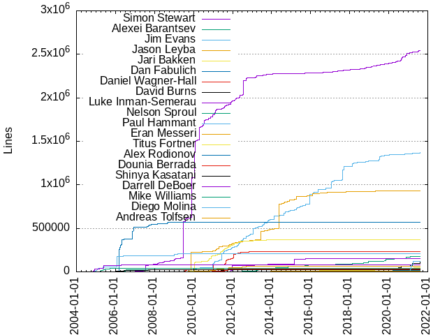
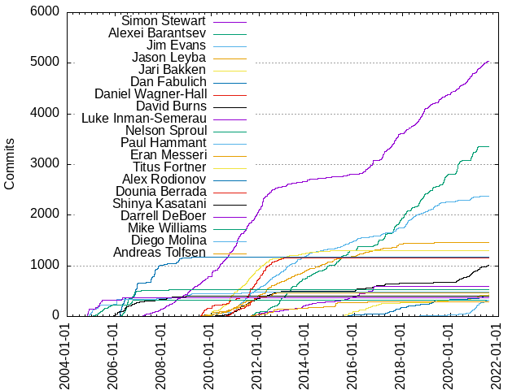

Authors
| Author | Commits (%) | + lines | - lines | First commit | Last commit | Age | Active days | # by commits |
|---|
| Simon Stewart | 5035 (18.53%) | 2546208 | 1549051 | 2006-06-01 | 2021-08-03 | 5541 days, 21:55:20 | 1575 | 1 |
| Alexei Barantsev | 3351 (12.33%) | 178236 | 161800 | 2011-09-22 | 2021-02-24 | 3443 days, 6:38:05 | 1053 | 2 |
| Jim Evans | 2382 (8.76%) | 1373956 | 1168948 | 2010-01-04 | 2021-08-05 | 4231 days, 7:37:33 | 917 | 3 |
| Jason Leyba | 1464 (5.39%) | 932591 | 554263 | 2009-07-27 | 2019-07-12 | 3637 days, 0:26:17 | 698 | 4 |
| Jari Bakken | 1298 (4.78%) | 372309 | 248812 | 2009-10-30 | 2016-10-31 | 2557 days, 21:52:36 | 418 | 5 |
| Dan Fabulich | 1175 (4.32%) | 567006 | 612880 | 2006-02-14 | 2017-11-02 | 4279 days, 3:49:53 | 230 | 6 |
| Daniel Wagner-Hall | 1162 (4.28%) | 233834 | 154438 | 2009-07-23 | 2017-10-31 | 3021 days, 14:55:59 | 358 | 7 |
| David Burns | 1011 (3.72%) | 119125 | 78740 | 2010-02-02 | 2021-08-09 | 4205 days, 20:47:23 | 493 | 8 |
| Luke Inman-Semerau | 599 (2.20%) | 155516 | 503247 | 2011-08-05 | 2017-08-14 | 2201 days, 2:19:43 | 325 | 9 |
| Nelson Sproul | 528 (1.94%) | 27964 | 43617 | 2006-03-30 | 2008-04-08 | 740 days, 19:57:17 | 131 | 10 |
| Paul Hammant | 477 (1.76%) | 211099 | 70561 | 2004-11-27 | 2017-03-16 | 4491 days, 22:22:58 | 120 | 11 |
| Eran Messeri | 473 (1.74%) | 65024 | 38960 | 2009-07-22 | 2013-05-29 | 1407 days, 0:07:09 | 255 | 12 |
| Titus Fortner | 426 (1.57%) | 50865 | 55294 | 2014-11-13 | 2021-08-03 | 2454 days, 5:00:10 | 180 | 13 |
| Alex Rodionov | 407 (1.50%) | 15455 | 15608 | 2015-05-26 | 2021-08-06 | 2263 days, 14:27:34 | 203 | 14 |
| Dounia Berrada | 406 (1.49%) | 35608 | 14735 | 2010-07-08 | 2012-01-27 | 567 days, 20:38:15 | 142 | 15 |
| Shinya Kasatani | 399 (1.47%) | 24877 | 8933 | 2005-11-14 | 2009-02-18 | 1191 days, 21:01:08 | 190 | 16 |
| Darrell DeBoer | 365 (1.34%) | 81210 | 101596 | 2004-11-05 | 2006-05-16 | 557 days, 0:44:23 | 59 | 17 |
| Mike Williams | 326 (1.20%) | 42705 | 60420 | 2004-11-17 | 2007-01-18 | 791 days, 20:49:01 | 92 | 18 |
| Diego Molina | 319 (1.17%) | 117984 | 64545 | 2017-12-06 | 2021-08-10 | 1342 days, 23:53:07 | 163 | 19 |
| Andreas Tolfsen | 289 (1.06%) | 7208 | 8334 | 2011-07-16 | 2016-11-30 | 1963 days, 19:29:28 | 109 | 20 |
These didn't make it to the top: Patrick Lightbody, Kristian Rosenvold, Adam Goucher, Jason Huggins, Dave Hunt, Haw-bin Chai, Michael Tamm, Philippe Hanrigou, François Reynaud, Samit Badle, Kevin Menard, Puja Jagani, Lucas Tierney, Seva Lotoshnikov, Jeff Xiong, Jason Juang, Aslak Hellesøy, AutomatedTester, Alexandr Savchuk, Sri Harsha, Andras Hatvani, Ajay Kemparaj, wpc, lmtierney, Ryan Wilcox, David Kemp, lhuang, Jiayao Yu, Thomas Walpole, Ahmed Ashour, Mike Melia, lukec, Miki Tebeka, Jeremy Herault, Santiago Suarez Ordoñez, Luke Hill, Jennifer Bevan, Doug Simmons, Daniel Davison, Joshua Bruning, Rajendra kadam, Mike Roberts, John Chen, Valery Yatsynovich, Perryn Fowler, Alberto Scotto, Corey Goldberg, Bret Pettichord, Andy Duncan, mpurland, Stuart Knightly, rbri, Tomer, Gregory Block, Krishnan Mahadevan, jimevans, Rajendra Kadam, Jayakumar Chinnappan, Carlos Garcia Campos, Alexander Bayandin, Machinexa2, shin, josephg, Ivan De Marino, RustyNail, Oleg Höfling, Isaul Vargas, Dave Hoover, Marcus Merrell, Jie Tina Wang, David Haeffner, Darren Cotterill, Clay Martin, Brandon Walderman, zsong, dratler, User253489, Marc Fisher, Leo Laskin, Glib Briia, Alex Savchuk, Saksham Gupta, Nik Nyby, Dima Kovalenko, Alexis J. Vuillemin, 43081j, rchatley, kjleftin, adiohana, Ziyu, Stanley Hon, Sean Poulter, Nick Schonning, Johan Lorenzo, Jim van Musscher, James Garbutt, Herst, dependabot[bot], Yi Zeng, Ulf Adams, Tomer Steinfeld, Tobias Lidskog, Michael Klepikov, Marvin Ojwang, Mark Collin, Lauro Moura, Evan Sangaline, Edirin Atumah, Dmitry Dubenets, Dharin Shah, Daniel Boelzle [:dbo], Daniel Bengtsson, Brian Burg, tommywo, petruc, mcharsley, adam goucher, WORKSTATION02, Tricia Crichton, Take, Roman Yurchak, Pydi Chandra, Olle Jonsson, Nina Satragno, Michael Zhou, Long Nguyen, Long Ly, Kyle McGonagle, Jonatan Kronqvist, John J. Barton, Jason Watt, JS31096, Henrik Skupin, Georgii Dolzhykov, Eric Allen, Dylan Reichstadt, Dmytro Shpakovskyi, Derrick Isaacson, David Lai, Daniel Fackrell, Chris Block, Andrey Botalov, Alex Henrie, wildloop, vergiliu, sugama, sridharUpputuri, seanrand57, rchatley@gmail.com, phoenix384, native-api, matthewdoerksen, kurniady@gmail.com, joe_schulte, haqer1, evgeniyat, cliffordcheng, bob, bhkwan, arnonax, aliking, YevgeniyShunevych, Vitaliy Potapov, Vijay Singh, Varun Menon, Toilal, Takeshi Kishi, Steven Hazel, Steve Smith, Shay Dratler, Sergey Tikhomirov, Sergey Fursov, Sankha Narayan Guria, Sam Uong, Rouke Broersma, Rory Craig-Barnes, Reinhold Degenfellner, Rami, Rafael Chavez, Pulkit Sharma, Potapov Dmitriy, Patrick Gansterer, Ondřej Čertík, Nitish, Maxim Perepelitsa, Mark Banner, Lucas Diniz, Kurt Alfred Kluever, Ken Kania, Kazuaki Matsuo, Julie Ralph, Joshua Grant, Josh Goldberg, Jordan Mace, Jonathan Leitschuh, Jonah Stiennon, John F. Douthat, JohanBrorson, Jim Brännlund, Jerry Pussinen, Jason Carr, Jan Trejbal, Jakub Vrána, Jacob Kiesel, Ish Abbi, Iain Dawson, Grant, Gerry Gao, GQAssurance, Fredrik Wollsén, Erik Kuefler, Erik Beans, Eli Flanagan, Danilo Bargen, Daniel Hahler, Craig Nishina, Christian Clauss, Artem Kozaev, Artem Koshelev, Anton Usmansky, Andrei Solntsev, Amit Bhoraniya, 保木本将之, Ákos Lukács, zhangwenqiang00, wiggin15, vflame, varunsurapaneni, ttanaka, trademark18, trabulmonkee, tporeba, tomaszn, tirana, timm-permeance, sunnyyukaige, sufyanAbbasi, space88man, smhc, skratchdot, rovner, rompic, richseviora, richard.hines, reichsta, pitachips, orangeudav, nvonop, no_author, myslak71, mtrea, morrishoresh, mohammadsavadkuhi, mkvetko, mitchloudenbeck, ming, mathlang, marcotcr, lsowen, larsiver, kvetko, kuhtich, kou1okada, keenangraham, kateposener, jwoolley, justinwoolley@gmail.com, juperala, jugglinmike, joma74, joerg1985, jochenberger, jmuramatsu, jkohls, jess010, jerome-nexedi, jamespdo, jamadam, ifland, huntr-helper, helen3141, hectorhon, havja, gregory.kleiner@accolade.com, granak, gentoo90, eoff, elgatov, doctor-house, dnknitro, daviande, darek8686, danvine, customcommander, clubfest, clarkenciel, cjayswal, chris, cezarelnazli, camelmasa, bozdemir84, bootstraponline, asmundak, anonymous_sdet, albertor24, abidema, Zhuo Peng, Zeki Mokhtarzada, Yurii Karabas, Yash Ladha, Yaroslav Admin, VladimirPodolyan, Vladimir Támara Patiño, Vishnuprakash P K, Virender Singh, Vincent Ladeuil, VimalRaj Selvam, VijendraEAtech, Vijendarn Selvarajah, Victor Tang, Ulrich Buchgraber, Troy Walsh, TriciaCrichton, Trey Chadick, Tony Hignett, Tommy Beadle, Tom Trumper, Toda Hiroshi, Timur Zolotuhin, Timofey Vasenin, Tim van der Lippe, Tim Sutton, Thunderforge, Thomas Grainger, Tamás Buka, Tamas Utasi, Takuma Chiba, Takuho NAKANO, Stoyan Dimkov, Steve Brown, Stephen Kuenzli, Sruthi, Sripathi Pai, Srinivasan Sekar, Snail, Shuhai Shen, Shubham Singh, Shreyan Avigyan, Shengfa, Shashank, Shan, Seth Lemanek, Sergey Chipiga, Sebastien Guillemot, Sebastian Monte, Scott Sauber, Scott Babcock, Sayyid Ali Sajjad Rizavi, Sarah Bird, Samuel Bétrisey, Salvador Cabrera Lozano, Sajad Torkamani, Ryszard Perkowski, Ryan Fitzpatrick, Russ Amos, Roubal Sehgal, Roman Zoller, Rod McNew, Robin Stocker, Roberto Rivera, Robert Elliot, Rob Wu, Rob Richardson, RichCrook, Remco, Reinaldo Rossetti, Ram Rachum, Rahul Shah, Radosław Sporny, Qays H. Poonawala, Prakhar Rawat, PombaM, Piotr Witoslawski, Phillip Haydon, Philipp Hancke, Phani Rithvij, Peter M. Landwehr, Peter Hedenskog, Pete Johns, Pavel Lobashov, Paul G Webster, Patrick Beart, Patrice Jaton, Pat Tullmann, Ondřej Machulda, Olly Dean, Olivier SCHNEIDER, Oleksii, Nozomi Ito, Nowell Strite, Nirantak Raghav, Nikolay Borisenko, Nicolas Sotgui, Naveen Singh, Nathan Isom, Nate Lowry, Mubariz Hajimuradov, Moshe Atlow, Moritz Sichert, Moisés, Miten Chauhan, Milan Falešník, Mikko Tiihonen, Mikhail Panin, Mikhail Fedosov, Mike Pennisi, Mike Bellew, Microsoft Provenance Contributions, Mickaël Schoentgen, Michał Herda, Michal Čihař, Michael P. Jung, Michael Nikitochkin, Michael Keeley, Michael Glass, Michael Benz, Melroy van den Berg, Maxim Lobanov, Max Schmitt, Max Perrello, Matthew Lymer, Matt Q, Mathias Rangel Wulff, Mathias Kresin, Mateusz Kajka, Masayuki Hokimoto, Mark Watson, Mark Stacey, Mark Christian, Mark Charsley, Maria Filonova, Marc Schlegel, Manoj Kumar, Maneesh MS, MandarJKulkarni, Magnus E. Halvorsen, Maciej Pakulski, Lukáš Linhart, Levi Noecker, Leonardo Salles, Leon Shams, Laurence Rowe, Laura, Larry Yu, Lamberto, Kunal Gosar, Krzysztof Księżyk, Kris, KentGu, Kensuke Numakura, Kazuhiro NISHIYAMA, Karl-Philipp Richter, Karl Kuehn, Kamen Litchev, Jörg Sautter, Justine Tunney, Justin Tulloss, JustasM, Junpei Kawamoto, Julien Phalip, Julian Kung, Julian Harty, Julian Didier, Joshua Fehler, Jongkuen Hong, Jonathon Kereliuk, Jonathan Lipps, Jonah, Jon Wallsten, John Pelly, John Dorlus, John Comeau, John Barbuto, Joel Hillacre, Joe Lencioni, Jim Reid, Jigar wala, Jewen Xiao, Jesserd July, JerryJia, Jeff Moore, Jayson Smith, Jayme, Jayasankar, Javier Candeira, Jason Parry, Jason Hu, Jason Anderson, Jason, Jane T, Jan Weitz, James Martin, Jake Klingensmith, Jake Garelick, Jake, Jacob Wejendorp, Jack Allen, JT Archie, J.D. Purcell, Ivan Pozdeev, Ivan Krutov, Ivan Kalinin, Isaac A. Murchie, Innokenty Shuvalov, Immanuel Hayden, Ilyas Bayraktar, Ilya Kozhevnikov, Iaroslav Naidon, Ian Lesperance, Hugo van Kemenade, Hiroaki Ninomiya, Herryanto Siatono, Heky, Harry, Hamir Mahal, Grzegorz Halat, Grigory Mischenko, Grey Li, Greg Hogan, Greg Fraley, Graham Russell, Grace Tang, Gopal Patel, Godefroid Chapelle, Giorgos Tzampanakis, Ghjuvan Lacambre, Gestalt LUR, Gerald Ehmayer, Gaurav, GFHuang, Fumiaki MATSUSHIMA, FrySabotage, Frederik Carlier, François JACQUES, François Freitag, Franz Liedke, Francis Bergin, Florian Zipperle, Florian Mutter, Florian LOPES, Florian Apolloner, Felipe Knorr Kuhn, Evgeniy Roldukhin, Erik E. Beerepoot, Eric Plaster, Enrique Daimiel, Ellis Percival, Elias Faxö, Ela Makiej, Edward Ned Harvey, Eduardo Wermuth, Edi Weissmann, Eberhard Beilharz, Dylan Semler, Dylan Lacey, Dvoryadkin Pavel, Donald Pipowitch, Dominik Rauch, Dominik Dary, Dmitry Tokarev, Dmitriy Sintsov, Dima Veselov, Diego Fernández Santos, Dharrya, DevineLiu, Denis Demchenko, David Zhu, David Sanders, David Hewson, David Fischer, Darrin Cherry, Danny Staple, Daniel Montoya, DanZeuss, Damir, Damien Allison, Dakkaron, Cédric Boutillier, CsolG, Craig, Corey Schooler, Connor Shea, ColinF, Christopher Wood, Christopher Buttkus, Chris Ward, Chris Mohr, Chris Martin, Chris Gamache, Chirag Jayswal, Chethana Paniyadi, Charles Thomas, Charles Lavery, ChanMin Kim, Carson McDonald, Carlos Ortega, Calin Marina, Brian Hawley, Brett Randall, Brett Porter, Brendan Mannix, Brandon Williams, Bohdan Tkachenko, Bogdan, Bob Lubecker, Bob Baron, Bill Agee, Benjamin Forehand Jr, Ben Sedat, Ben Lamm, Ben Kucera, Ben Congleton, Bartek Florczak, Baran Ozgul, Artur Orlov, Artur, ArthurGIT2017, Anton Vynogradenko, Anton Velma, Andrii Rohovets, Andrei Botalov, Andre Wiggins, Anastasia Vataman, Anand Jayaram, Anand Bagmar, Alice Yang, Alfonso Presa, Alexei Vinogradov, Alexandre Abreu, Alexander Kavanaugh, Alex Eagle, Aleksei Moskvin, Alberto, Albert, Alan Verresen, Alan Baird, Al Sutton, Akhil Lb, Adrian Leonhard, Adrian Dymorz, Adi Roiban, Adam Smith, Adam Demuri, Abhilash Thaduka, Abhijeet Kasurde, Abdelrahman Talaat, Aaron McKinley, Aaron Evans, AMIL USLU, AJ, 1kastner, 0uk
Only top 20 authors shown
Only top 20 authors shown
| Month | Author | Commits (%) | Next top 5 | Number of authors |
|---|
| 2021-08 | Puja Jagani | 5 (23.81% of 21) | Diego Molina, David Burns, Jim Evans, Titus Fortner, Simon Stewart | 7 |
| 2021-07 | David Burns | 18 (26.47% of 68) | Simon Stewart, Puja Jagani, Diego Molina, Oleg Höfling, Alex Rodionov | 12 |
| 2021-06 | Diego Molina | 27 (27.55% of 98) | Simon Stewart, Puja Jagani, Jim Evans, Titus Fortner, David Burns | 13 |
| 2021-05 | Simon Stewart | 36 (37.50% of 96) | Alex Rodionov, Puja Jagani, David Burns, Diego Molina, Sri Harsha | 9 |
| 2021-04 | Simon Stewart | 39 (37.86% of 103) | David Burns, Alex Rodionov, Sri Harsha, Diego Molina, Puja Jagani | 13 |
| 2021-03 | Simon Stewart | 37 (20.33% of 182) | David Burns, Diego Molina, Titus Fortner, Puja Jagani, Alex Rodionov | 18 |
| 2021-02 | Alexei Barantsev | 85 (33.33% of 255) | Simon Stewart, Diego Molina, Titus Fortner, David Burns, Sri Harsha | 13 |
| 2021-01 | Diego Molina | 45 (29.03% of 155) | Alexei Barantsev, David Burns, Simon Stewart, Titus Fortner, Puja Jagani | 16 |
| 2020-12 | Alexei Barantsev | 43 (29.86% of 144) | Jim Evans, Diego Molina, Simon Stewart, David Burns, Machinexa2 | 16 |
| 2020-11 | Alexei Barantsev | 108 (32.24% of 335) | Simon Stewart, David Burns, Diego Molina, Jim Evans, Rajendra Kadam | 17 |
| 2020-10 | Simon Stewart | 35 (32.11% of 109) | David Burns, Diego Molina, Jim Evans, Puja Jagani, Sri Harsha | 15 |
| 2020-09 | Simon Stewart | 74 (59.20% of 125) | David Burns, Diego Molina, Rajendra kadam, Alex Rodionov, Sri Harsha | 18 |
| 2020-08 | Simon Stewart | 22 (47.83% of 46) | David Burns, Diego Molina, Tomer, Sri Harsha, Rajendra kadam | 13 |
| 2020-07 | Simon Stewart | 26 (23.01% of 113) | David Burns, Titus Fortner, Alexei Barantsev, Puja Jagani, Sri Harsha | 20 |
| 2020-06 | Simon Stewart | 26 (36.62% of 71) | Alexei Barantsev, David Burns, Saksham Gupta, Lauro Moura, Take | 18 |
| 2020-05 | Simon Stewart | 49 (29.70% of 165) | Alexei Barantsev, David Burns, Diego Molina, Alex Rodionov, Sri Harsha | 16 |
| 2020-04 | Alexei Barantsev | 169 (65.50% of 258) | Jim Evans, David Burns, Simon Stewart, Sri Harsha, Titus Fortner | 19 |
| 2020-03 | Simon Stewart | 38 (27.34% of 139) | Alexei Barantsev, David Burns, Jim Evans, Tomer, Sri Harsha | 22 |
| 2020-02 | Simon Stewart | 4 (16.67% of 24) | David Burns, Tomer, Jordan Mace, Diego Molina, trademark18 | 15 |
| 2020-01 | Simon Stewart | 49 (66.22% of 74) | Alexei Barantsev, Jim Evans, Alex Rodionov, Brandon Walderman, adam goucher | 11 |
| 2019-12 | Alex Rodionov | 4 (20.00% of 20) | Titus Fortner, Sri Harsha, Simon Stewart, adam goucher, Tricia Crichton | 11 |
| 2019-11 | Alexei Barantsev | 34 (39.53% of 86) | Simon Stewart, Titus Fortner, Diego Molina, Sri Harsha, Luke Hill | 12 |
| 2019-10 | Alexei Barantsev | 63 (45.65% of 138) | Luke Hill, Simon Stewart, Jim Evans, Stanley Hon, John Chen | 17 |
| 2019-09 | Alexei Barantsev | 93 (68.38% of 136) | Simon Stewart, Luke Hill, Jim Evans, Tomer, John Chen | 16 |
| 2019-08 | Simon Stewart | 30 (35.71% of 84) | Alexei Barantsev, Lucas Tierney, Jim Evans, Marcus Merrell, Diego Molina | 18 |
| 2019-07 | Simon Stewart | 42 (30.22% of 139) | Jim Evans, Alexei Barantsev, Titus Fortner, Thomas Walpole, Marcus Merrell | 18 |
| 2019-06 | Simon Stewart | 28 (23.93% of 117) | Jim Evans, Titus Fortner, Alexei Barantsev, Thomas Walpole, David Haeffner | 20 |
| 2019-05 | Jim Evans | 20 (22.47% of 89) | Simon Stewart, Alex Rodionov, Jason Leyba, Alexei Barantsev, adiohana | 18 |
| 2019-04 | Alexei Barantsev | 58 (38.41% of 151) | Alex Rodionov, Jim Evans, Simon Stewart, Thomas Walpole, Titus Fortner | 15 |
| 2019-03 | Simon Stewart | 23 (33.33% of 69) | Thomas Walpole, Jim Evans, Alexei Barantsev, Alex Rodionov, cliffordcheng | 14 |
| 2019-02 | Simon Stewart | 44 (32.35% of 136) | Alexei Barantsev, Jim Evans, Thomas Walpole, Corey Goldberg, Jonathan Leitschuh | 16 |
| 2019-01 | Alexei Barantsev | 24 (26.97% of 89) | Jim Evans, Simon Stewart, Alex Rodionov, Lucas Tierney, Vijay Singh | 17 |
| 2018-12 | Simon Stewart | 31 (31.63% of 98) | Alexei Barantsev, Jim Evans, jimevans, native-api, Trey Chadick | 16 |
| 2018-11 | Simon Stewart | 89 (48.11% of 185) | Alexei Barantsev, Jim Evans, Valery Yatsynovich, Diego Molina, David Burns | 15 |
| 2018-10 | Simon Stewart | 69 (39.88% of 173) | Alexei Barantsev, Alex Rodionov, Jim Evans, Lucas Tierney, jimevans | 19 |
| 2018-09 | Alexei Barantsev | 89 (45.64% of 195) | Simon Stewart, Alex Rodionov, Jim Evans, Diego Molina, Lucas Tierney | 16 |
| 2018-08 | Simon Stewart | 55 (41.35% of 133) | Alexei Barantsev, Jim Evans, Lucas Tierney, Clay Martin, Alex Rodionov | 13 |
| 2018-07 | Simon Stewart | 44 (41.12% of 107) | Jim Evans, Alexei Barantsev, Alex Rodionov, Krishnan Mahadevan, Titus Fortner | 22 |
| 2018-06 | Jim Evans | 26 (30.23% of 86) | Simon Stewart, Alexei Barantsev, David Burns, Alex Rodionov, lmtierney | 26 |
| 2018-05 | Alexei Barantsev | 52 (36.62% of 142) | Jim Evans, Simon Stewart, Alex Rodionov, lmtierney, Valery Yatsynovich | 14 |
| 2018-04 | Simon Stewart | 27 (29.35% of 92) | Jim Evans, Alexei Barantsev, lmtierney, 43081j, Doug Simmons | 12 |
| 2018-03 | Jim Evans | 68 (40.48% of 168) | Simon Stewart, Alexei Barantsev, Alex Rodionov, lmtierney, Titus Fortner | 21 |
| 2018-02 | Jim Evans | 55 (35.48% of 155) | Alexei Barantsev, Simon Stewart, Alex Rodionov, lmtierney, Valery Yatsynovich | 18 |
| 2018-01 | Alexei Barantsev | 61 (46.56% of 131) | Simon Stewart, Jim Evans, Jason Leyba, Alex Rodionov, lmtierney | 18 |
| 2017-12 | Alexei Barantsev | 50 (53.76% of 93) | Alex Rodionov, lmtierney, Simon Stewart, Jason Leyba, Lucas Tierney | 16 |
| 2017-11 | Alexei Barantsev | 60 (34.09% of 176) | Simon Stewart, Jim Evans, Alex Rodionov, lmtierney, Titus Fortner | 24 |
| 2017-10 | Simon Stewart | 69 (33.66% of 205) | Jason Leyba, Alexei Barantsev, lmtierney, Jim Evans, RustyNail | 20 |
| 2017-09 | Simon Stewart | 55 (31.07% of 177) | Alexei Barantsev, Jim Evans, Alex Rodionov, Ahmed Ashour, RustyNail | 17 |
| 2017-08 | Alexei Barantsev | 104 (41.60% of 250) | Simon Stewart, Jim Evans, Alex Rodionov, Lucas Tierney, Joshua Bruning | 19 |
| 2017-07 | Simon Stewart | 48 (40.00% of 120) | Alexei Barantsev, Jason Leyba, Jason Juang, Alex Rodionov, Olle Jonsson | 18 |
| 2017-06 | Simon Stewart | 36 (41.38% of 87) | Alex Rodionov, Jason Juang, Lucas Tierney, Titus Fortner, Doug Simmons | 12 |
| 2017-05 | Simon Stewart | 32 (40.51% of 79) | Alex Rodionov, Jason Juang, Alexei Barantsev, Lucas Tierney, Jim Evans | 13 |
| 2017-04 | Alexei Barantsev | 71 (40.57% of 175) | Simon Stewart, David Burns, Jim Evans, Ahmed Ashour, Alex Rodionov | 24 |
| 2017-03 | Simon Stewart | 96 (40.34% of 238) | Alexei Barantsev, Jim Evans, Lucas Tierney, David Burns, Jason Juang | 24 |
| 2017-02 | Simon Stewart | 43 (31.39% of 137) | Titus Fortner, Lucas Tierney, Jim Evans, Jason Leyba, Alexei Barantsev | 23 |
| 2017-01 | Alexei Barantsev | 36 (31.58% of 114) | Simon Stewart, Jim Evans, Titus Fortner, Jason Leyba, Lucas Tierney | 20 |
| 2016-12 | Alexei Barantsev | 55 (67.07% of 82) | Titus Fortner, Luke Inman-Semerau, Simon Stewart, richseviora, mcharsley | 19 |
| 2016-11 | Dave Hunt | 23 (21.50% of 107) | Jason Leyba, David Burns, Titus Fortner, Alexei Barantsev, lmtierney | 24 |
| 2016-10 | Luke Inman-Semerau | 72 (25.99% of 277) | Simon Stewart, Dave Hunt, Alexei Barantsev, Jason Leyba, David Burns | 31 |
| 2016-09 | Simon Stewart | 48 (32.21% of 149) | Titus Fortner, David Burns, Luke Inman-Semerau, Jason Leyba, Jim Evans | 21 |
| 2016-08 | Simon Stewart | 34 (34.69% of 98) | Jason Leyba, Titus Fortner, Luke Inman-Semerau, Jim Evans, Jason Juang | 18 |
| 2016-07 | Simon Stewart | 32 (37.21% of 86) | Luke Inman-Semerau, Titus Fortner, David Burns, Rafael Chavez, Jim Evans | 14 |
| 2016-06 | Simon Stewart | 48 (32.88% of 146) | Titus Fortner, Jason Leyba, Luke Inman-Semerau, Dave Hunt, David Burns | 15 |
| 2016-05 | Simon Stewart | 18 (22.50% of 80) | Dave Hunt, Jim Evans, Jason Leyba, Ahmed Ashour, Luke Inman-Semerau | 20 |
| 2016-04 | Simon Stewart | 21 (42.86% of 49) | Jason Juang, Alexei Barantsev, Jason Leyba, Luke Inman-Semerau, Joshua Bruning | 14 |
| 2016-03 | Luke Inman-Semerau | 29 (21.64% of 134) | Titus Fortner, Jason Leyba, Alex Rodionov, David Burns, Jim Evans | 21 |
| 2016-02 | Alexei Barantsev | 41 (28.67% of 143) | Jim Evans, Luke Inman-Semerau, Jason Leyba, Titus Fortner, Glib Briia | 28 |
| 2016-01 | David Burns | 35 (21.21% of 165) | Alexei Barantsev, Jim Evans, Jason Leyba, Luke Inman-Semerau, Titus Fortner | 23 |
| 2015-12 | Jim Evans | 23 (54.76% of 42) | Simon Stewart, Titus Fortner, Luke Inman-Semerau, kuhtich, Robert Elliot | 12 |
| 2015-11 | Titus Fortner | 22 (27.16% of 81) | Jim Evans, Jason Leyba, Luke Inman-Semerau, Alex Rodionov, Jason Juang | 17 |
| 2015-10 | Alexei Barantsev | 36 (23.23% of 155) | Titus Fortner, Jim Evans, Luke Inman-Semerau, Simon Stewart, Jason Leyba | 18 |
| 2015-09 | Alexei Barantsev | 47 (36.43% of 129) | Simon Stewart, Luke Inman-Semerau, Jason Leyba, Titus Fortner, Jim Evans | 20 |
| 2015-08 | Alexei Barantsev | 16 (27.12% of 59) | Jim Evans, AutomatedTester, Seva Lotoshnikov, Luke Inman-Semerau, Joshua Bruning | 20 |
| 2015-07 | Jim Evans | 29 (22.83% of 127) | Titus Fortner, Luke Inman-Semerau, AutomatedTester, Ahmed Ashour, Simon Stewart | 24 |
| 2015-06 | Alexei Barantsev | 35 (26.52% of 132) | Jim Evans, Seva Lotoshnikov, Ahmed Ashour, Simon Stewart, Luke Inman-Semerau | 23 |
| 2015-05 | Alexei Barantsev | 74 (70.48% of 105) | rbri, Jim Evans, Simon Stewart, Joshua Bruning, Jason Leyba | 19 |
| 2015-04 | Alexei Barantsev | 26 (24.30% of 107) | Jim Evans, Jason Leyba, Andreas Tolfsen, Seva Lotoshnikov, Luke Inman-Semerau | 21 |
| 2015-03 | Andreas Tolfsen | 49 (29.34% of 167) | Alexei Barantsev, Seva Lotoshnikov, Luke Inman-Semerau, Jim Evans, AutomatedTester | 21 |
| 2015-02 | Jason Leyba | 36 (42.86% of 84) | Andreas Tolfsen, Seva Lotoshnikov, Luke Inman-Semerau, Alexei Barantsev, Jim Evans | 14 |
| 2015-01 | Simon Stewart | 11 (26.19% of 42) | Jason Leyba, Samit Badle, Seva Lotoshnikov, Jason Juang, Alexei Barantsev | 9 |
| 2014-12 | Seva Lotoshnikov | 11 (33.33% of 33) | Jim Evans, Jason Leyba, Alexei Barantsev, Ondřej Čertík, Jari Bakken | 11 |
| 2014-11 | Alexei Barantsev | 38 (51.35% of 74) | Jason Leyba, Jim Evans, Seva Lotoshnikov, Simon Stewart, Jari Bakken | 14 |
| 2014-10 | Alexei Barantsev | 37 (35.24% of 105) | Jason Leyba, Simon Stewart, Luke Inman-Semerau, Jason Juang, Andreas Tolfsen | 14 |
| 2014-09 | Samit Badle | 26 (21.49% of 121) | Alexei Barantsev, Jim Evans, Seva Lotoshnikov, Jason Leyba, Simon Stewart | 15 |
| 2014-08 | Jason Leyba | 21 (33.33% of 63) | Alexei Barantsev, Seva Lotoshnikov, Jim Evans, Jari Bakken, Simon Stewart | 14 |
| 2014-07 | Jason Leyba | 18 (34.62% of 52) | Jim Evans, Alexei Barantsev, Luke Inman-Semerau, AutomatedTester, Alex Henrie | 14 |
| 2014-06 | Alexei Barantsev | 19 (41.30% of 46) | Jim Evans, Jari Bakken, Simon Stewart, Luke Inman-Semerau, Andreas Tolfsen | 13 |
| 2014-05 | Alexei Barantsev | 26 (27.96% of 93) | Jason Leyba, Luke Inman-Semerau, Jim Evans, AutomatedTester, Simon Stewart | 14 |
| 2014-04 | Jason Leyba | 23 (40.35% of 57) | Alexei Barantsev, Seva Lotoshnikov, Jim Evans, Luke Inman-Semerau, smhc | 14 |
| 2014-03 | Alexei Barantsev | 35 (34.65% of 101) | Jim Evans, Luke Inman-Semerau, Kevin Menard, AutomatedTester, Simon Stewart | 20 |
| 2014-02 | Jim Evans | 21 (23.60% of 89) | Jason Leyba, Luke Inman-Semerau, Jari Bakken, Alexei Barantsev, Samit Badle | 15 |
| 2014-01 | Jim Evans | 34 (25.95% of 131) | Simon Stewart, Alexei Barantsev, Jason Leyba, Jari Bakken, Andreas Tolfsen | 12 |
| 2013-12 | Jason Leyba | 28 (23.33% of 120) | Jim Evans, Luke Inman-Semerau, Alexei Barantsev, Simon Stewart, Jari Bakken | 12 |
| 2013-11 | Jason Leyba | 14 (28.00% of 50) | Alexei Barantsev, Luke Inman-Semerau, Jim Evans, Andreas Tolfsen, Seva Lotoshnikov | 9 |
| 2013-10 | Jim Evans | 39 (23.49% of 166) | Alexei Barantsev, Luke Inman-Semerau, Jason Leyba, Jari Bakken, Alexandr Savchuk | 17 |
| 2013-09 | Alexei Barantsev | 38 (33.63% of 113) | Alexandr Savchuk, Jason Leyba, Jim Evans, Seva Lotoshnikov, Samit Badle | 14 |
| 2013-08 | Jim Evans | 44 (26.04% of 169) | Alexei Barantsev, Alexandr Savchuk, Samit Badle, Jason Leyba, Simon Stewart | 16 |
| 2013-07 | Jim Evans | 34 (27.42% of 124) | Alexei Barantsev, Alexandr Savchuk, Jason Leyba, Simon Stewart, Samit Badle | 13 |
| 2013-06 | Jason Leyba | 17 (48.57% of 35) | Simon Stewart, Samit Badle, Alexei Barantsev, Alex Savchuk, Steve Brown | 12 |
| 2013-05 | Alexei Barantsev | 68 (41.72% of 163) | Jim Evans, Jason Leyba, Luke Inman-Semerau, Simon Stewart, Jayakumar Chinnappan | 20 |
| 2013-04 | Alexei Barantsev | 49 (31.61% of 155) | Jim Evans, Jason Leyba, Jari Bakken, Simon Stewart, Jayakumar Chinnappan | 19 |
| 2013-03 | Alexei Barantsev | 26 (22.22% of 117) | Jason Leyba, Simon Stewart, Jim Evans, Jari Bakken, Luke Inman-Semerau | 16 |
| 2013-02 | Alexei Barantsev | 63 (31.98% of 197) | Jim Evans, Jason Leyba, Simon Stewart, Luke Inman-Semerau, Jari Bakken | 15 |
| 2013-01 | Jim Evans | 36 (20.11% of 179) | Alexei Barantsev, Daniel Wagner-Hall, Luke Inman-Semerau, Jason Leyba, Simon Stewart | 22 |
| 2012-12 | Alexei Barantsev | 43 (31.85% of 135) | Jim Evans, David Burns, Jason Leyba, Jari Bakken, Simon Stewart | 14 |
| 2012-11 | Alexei Barantsev | 64 (36.99% of 173) | Jim Evans, Jason Leyba, Daniel Wagner-Hall, Jari Bakken, David Burns | 12 |
| 2012-10 | Alexei Barantsev | 39 (30.47% of 128) | Daniel Wagner-Hall, Jason Leyba, Jim Evans, Andreas Tolfsen, Luke Inman-Semerau | 12 |
| 2012-09 | Simon Stewart | 29 (22.83% of 127) | Jason Leyba, Jim Evans, Alexei Barantsev, Daniel Wagner-Hall, Ajay Kemparaj | 11 |
| 2012-08 | Andreas Tolfsen | 38 (31.40% of 121) | Jim Evans, Eran Messeri, Simon Stewart, David Burns, Jason Leyba | 13 |
| 2012-07 | Daniel Wagner-Hall | 46 (16.49% of 279) | Simon Stewart, Jason Leyba, Jim Evans, Eran Messeri, David Burns | 14 |
| 2012-06 | Jim Evans | 34 (17.17% of 198) | Simon Stewart, Daniel Wagner-Hall, Jari Bakken, Alexei Barantsev, Jason Leyba | 10 |
| 2012-05 | Simon Stewart | 58 (19.59% of 296) | Alexei Barantsev, Jim Evans, Jason Leyba, Andreas Tolfsen, Jari Bakken | 11 |
| 2012-04 | Daniel Wagner-Hall | 66 (23.16% of 285) | Jason Leyba, Kristian Rosenvold, Jari Bakken, Jim Evans, Simon Stewart | 16 |
| 2012-03 | Simon Stewart | 113 (36.45% of 310) | Daniel Wagner-Hall, Jim Evans, Jari Bakken, Kristian Rosenvold, David Burns | 15 |
| 2012-02 | Simon Stewart | 97 (39.43% of 246) | Daniel Wagner-Hall, Kristian Rosenvold, Jari Bakken, Jim Evans, Jason Leyba | 13 |
| 2012-01 | Daniel Wagner-Hall | 74 (19.84% of 373) | Simon Stewart, Jari Bakken, Dounia Berrada, Jim Evans, Jason Leyba | 16 |
| 2011-12 | Simon Stewart | 84 (29.37% of 286) | Jason Leyba, Daniel Wagner-Hall, Jari Bakken, Jim Evans, Kevin Menard | 18 |
| 2011-11 | Simon Stewart | 64 (15.31% of 418) | Jari Bakken, Daniel Wagner-Hall, Alexei Barantsev, Jason Leyba, Luke Inman-Semerau | 17 |
| 2011-10 | Daniel Wagner-Hall | 71 (17.53% of 405) | Simon Stewart, Dounia Berrada, Jim Evans, Jari Bakken, Eran Messeri | 17 |
| 2011-09 | Simon Stewart | 46 (17.97% of 256) | Jari Bakken, Eran Messeri, Kristian Rosenvold, Andreas Tolfsen, Dounia Berrada | 19 |
| 2011-08 | Daniel Wagner-Hall | 142 (31.21% of 455) | Dounia Berrada, Jari Bakken, Jim Evans, Eran Messeri, Simon Stewart | 14 |
| 2011-07 | Simon Stewart | 86 (25.22% of 341) | Jari Bakken, Jim Evans, Daniel Wagner-Hall, Kevin Menard, David Burns | 17 |
| 2011-06 | Simon Stewart | 63 (19.50% of 323) | Jim Evans, Jari Bakken, François Reynaud, Jason Leyba, Dounia Berrada | 16 |
| 2011-05 | Jim Evans | 33 (18.64% of 177) | Simon Stewart, Jason Leyba, Jari Bakken, Eran Messeri, François Reynaud | 12 |
| 2011-04 | Jari Bakken | 39 (17.41% of 224) | Simon Stewart, Jim Evans, François Reynaud, David Burns, Jason Leyba | 17 |
| 2011-03 | Simon Stewart | 54 (21.60% of 250) | Jim Evans, David Burns, Jari Bakken, Dounia Berrada, Jason Leyba | 15 |
| 2011-02 | Simon Stewart | 103 (39.77% of 259) | Jari Bakken, David Burns, Jim Evans, Jason Leyba, Eran Messeri | 14 |
| 2011-01 | Simon Stewart | 83 (27.95% of 297) | Jim Evans, Daniel Wagner-Hall, Jari Bakken, David Burns, Dounia Berrada | 14 |
| 2010-12 | Simon Stewart | 70 (24.73% of 283) | Jason Leyba, Jari Bakken, Dounia Berrada, David Burns, Jim Evans | 14 |
| 2010-11 | Jari Bakken | 58 (25.00% of 232) | Adam Goucher, Dounia Berrada, Simon Stewart, Jason Leyba, Eran Messeri | 12 |
| 2010-10 | Jari Bakken | 103 (35.27% of 292) | Simon Stewart, Daniel Wagner-Hall, Eran Messeri, Dounia Berrada, David Burns | 14 |
| 2010-09 | Simon Stewart | 76 (41.53% of 183) | Daniel Wagner-Hall, Jari Bakken, Jason Leyba, Jeremy Herault, David Burns | 13 |
| 2010-08 | Simon Stewart | 26 (24.76% of 105) | Jari Bakken, Eran Messeri, Michael Tamm, Jason Leyba, Dounia Berrada | 11 |
| 2010-07 | Simon Stewart | 49 (35.77% of 137) | Michael Tamm, Jari Bakken, Miki Tebeka, David Burns, Daniel Wagner-Hall | 13 |
| 2010-06 | Jari Bakken | 42 (25.45% of 165) | Simon Stewart, Miki Tebeka, Jeremy Herault, Jason Leyba, Kevin Menard | 15 |
| 2010-05 | Simon Stewart | 72 (51.43% of 140) | Jari Bakken, Miki Tebeka, Eran Messeri, Jim Evans, Daniel Wagner-Hall | 10 |
| 2010-04 | Simon Stewart | 52 (54.74% of 95) | Jason Leyba, Jari Bakken, Michael Tamm, Jeremy Herault, Adam Goucher | 11 |
| 2010-03 | Adam Goucher | 17 (29.31% of 58) | Jari Bakken, Jim Evans, Eran Messeri, David Burns, Jeremy Herault | 9 |
| 2010-02 | Simon Stewart | 22 (20.37% of 108) | Jim Evans, Eran Messeri, Daniel Wagner-Hall, Adam Goucher, Jason Huggins | 13 |
| 2010-01 | Adam Goucher | 36 (19.25% of 187) | Jim Evans, Jari Bakken, Simon Stewart, Daniel Wagner-Hall, Haw-bin Chai | 16 |
| 2009-12 | Simon Stewart | 55 (30.73% of 179) | Jari Bakken, Daniel Wagner-Hall, Patrick Lightbody, Jason Leyba, Adam Goucher | 10 |
| 2009-11 | Simon Stewart | 56 (35.00% of 160) | Jari Bakken, Daniel Wagner-Hall, Jason Leyba, Patrick Lightbody, Eran Messeri | 11 |
| 2009-10 | Simon Stewart | 32 (38.55% of 83) | Daniel Wagner-Hall, Jason Leyba, Eran Messeri, Michael Tamm, Jason Huggins | 7 |
| 2009-09 | Daniel Wagner-Hall | 65 (61.32% of 106) | Simon Stewart, Jason Leyba, Jennifer Bevan, Michael Tamm, Haw-bin Chai | 6 |
| 2009-08 | Daniel Wagner-Hall | 48 (42.11% of 114) | Simon Stewart, Jason Leyba, Michael Tamm, Jennifer Bevan, Eran Messeri | 8 |
| 2009-07 | Simon Stewart | 24 (45.28% of 53) | Daniel Wagner-Hall, Haw-bin Chai, Eran Messeri, Philippe Hanrigou, Jennifer Bevan | 9 |
| 2009-06 | Simon Stewart | 26 (39.39% of 66) | Jason Huggins, Andras Hatvani, Michael Tamm, Philippe Hanrigou, Patrick Lightbody | 9 |
| 2009-05 | Simon Stewart | 12 (27.27% of 44) | Andras Hatvani, Patrick Lightbody, Philippe Hanrigou, Jiayao Yu, Michael Tamm | 8 |
| 2009-04 | Simon Stewart | 44 (61.11% of 72) | Andras Hatvani, Michael Tamm, Patrick Lightbody, Gregory Block, Alexis J. Vuillemin | 7 |
| 2009-03 | Dan Fabulich | 17 (20.48% of 83) | Simon Stewart, Paul Hammant, Haw-bin Chai, Andras Hatvani, Jiayao Yu | 10 |
| 2009-02 | Simon Stewart | 45 (38.46% of 117) | Jiayao Yu, Paul Hammant, Haw-bin Chai, Philippe Hanrigou, Gregory Block | 10 |
| 2009-01 | Simon Stewart | 44 (44.00% of 100) | Haw-bin Chai, Patrick Lightbody, Philippe Hanrigou, Dan Fabulich, Gregory Block | 10 |
| 2008-12 | Paul Hammant | 34 (36.56% of 93) | Simon Stewart, Andras Hatvani, lukec, Haw-bin Chai, Michael Tamm | 8 |
| 2008-11 | Simon Stewart | 30 (65.22% of 46) | Paul Hammant, Haw-bin Chai, Philippe Hanrigou, Michael Tamm, Andras Hatvani | 8 |
| 2008-10 | Simon Stewart | 30 (43.48% of 69) | Philippe Hanrigou, Michael Tamm, Patrick Lightbody, Andras Hatvani, Paul Hammant | 10 |
| 2008-09 | Dan Fabulich | 46 (46.94% of 98) | Haw-bin Chai, Philippe Hanrigou, Simon Stewart, Jennifer Bevan, ifland | 8 |
| 2008-08 | Dan Fabulich | 30 (30.30% of 99) | Simon Stewart, Philippe Hanrigou, Paul Hammant, Haw-bin Chai, Michael Tamm | 7 |
| 2008-07 | Simon Stewart | 45 (44.12% of 102) | Dan Fabulich, Philippe Hanrigou, Haw-bin Chai, Jennifer Bevan, Jiayao Yu | 8 |
| 2008-06 | Simon Stewart | 24 (43.64% of 55) | Philippe Hanrigou, Shinya Kasatani, Paul Hammant, Michael Tamm, Haw-bin Chai | 8 |
| 2008-05 | Simon Stewart | 15 (22.39% of 67) | Haw-bin Chai, Shinya Kasatani, Paul Hammant, Philippe Hanrigou, Michael Tamm | 10 |
| 2008-04 | Philippe Hanrigou | 35 (40.70% of 86) | Simon Stewart, Haw-bin Chai, Nelson Sproul, Paul Hammant, Shinya Kasatani | 9 |
| 2008-03 | Simon Stewart | 23 (29.49% of 78) | Shinya Kasatani, Haw-bin Chai, Nelson Sproul, Dan Fabulich, Patrick Lightbody | 8 |
| 2008-02 | Simon Stewart | 26 (29.21% of 89) | Shinya Kasatani, Haw-bin Chai, Patrick Lightbody, Jiayao Yu, Dan Fabulich | 10 |
| 2008-01 | Simon Stewart | 25 (39.68% of 63) | Patrick Lightbody, Dan Fabulich, Haw-bin Chai, rchatley, mpurland | 6 |
| 2007-12 | Simon Stewart | 19 (50.00% of 38) | Dan Fabulich, lukec, Haw-bin Chai, shin, Jiayao Yu | 7 |
| 2007-11 | Simon Stewart | 23 (30.26% of 76) | Haw-bin Chai, Dan Fabulich, Jennifer Bevan, Jason Huggins, Shinya Kasatani | 7 |
| 2007-10 | Dan Fabulich | 58 (64.44% of 90) | Simon Stewart, Shinya Kasatani, Jennifer Bevan, Haw-bin Chai, lukec | 7 |
| 2007-09 | Dan Fabulich | 70 (72.16% of 97) | Shinya Kasatani, Paul Hammant, Simon Stewart, Patrick Lightbody | 5 |
| 2007-08 | Dan Fabulich | 81 (73.64% of 110) | Patrick Lightbody, Simon Stewart, Nelson Sproul | 4 |
| 2007-07 | Dan Fabulich | 104 (86.67% of 120) | Simon Stewart, Patrick Lightbody, shin | 4 |
| 2007-06 | mpurland | 17 (41.46% of 41) | Simon Stewart, Shinya Kasatani, lukec | 4 |
| 2007-05 | Patrick Lightbody | 19 (73.08% of 26) | Simon Stewart, Shinya Kasatani | 3 |
| 2007-04 | Dan Fabulich | 21 (43.75% of 48) | Simon Stewart, Patrick Lightbody, Nelson Sproul, Shinya Kasatani | 5 |
| 2007-03 | Patrick Lightbody | 29 (50.88% of 57) | Simon Stewart, lukec, Shinya Kasatani, Dan Fabulich, shin | 6 |
| 2007-02 | Simon Stewart | 9 (64.29% of 14) | Patrick Lightbody, lukec, Shinya Kasatani, Nelson Sproul | 5 |
| 2007-01 | Shinya Kasatani | 14 (58.33% of 24) | Simon Stewart, lukec, Patrick Lightbody, Mike Williams, Nelson Sproul | 6 |
| 2006-12 | Dan Fabulich | 91 (78.45% of 116) | Nelson Sproul, Shinya Kasatani, shin, lukec, no_author | 6 |
| 2006-11 | Dan Fabulich | 134 (72.04% of 186) | Nelson Sproul, Shinya Kasatani, lukec, Patrick Lightbody, wpc | 6 |
| 2006-10 | Nelson Sproul | 76 (42.70% of 178) | Dan Fabulich, Shinya Kasatani, Patrick Lightbody, lukec, Mike Williams | 8 |
| 2006-09 | Mike Williams | 58 (25.89% of 224) | wpc, Jeff Xiong, Shinya Kasatani, Nelson Sproul, lhuang | 9 |
| 2006-08 | Jeff Xiong | 52 (38.52% of 135) | Mike Williams, lhuang, wpc, Dan Fabulich, Shinya Kasatani | 7 |
| 2006-07 | Nelson Sproul | 129 (66.49% of 194) | Jeff Xiong, lhuang, Shinya Kasatani, Patrick Lightbody, Jason Huggins | 9 |
| 2006-06 | Nelson Sproul | 139 (60.96% of 228) | Shinya Kasatani, Dan Fabulich, Patrick Lightbody, Simon Stewart, Jason Huggins | 6 |
| 2006-05 | Dan Fabulich | 93 (48.19% of 193) | Shinya Kasatani, Nelson Sproul, Patrick Lightbody, Paul Hammant, Darrell DeBoer | 7 |
| 2006-04 | Dan Fabulich | 118 (54.88% of 215) | Darrell DeBoer, Nelson Sproul, David Kemp, Patrick Lightbody, Shinya Kasatani | 7 |
| 2006-03 | Dan Fabulich | 114 (74.03% of 154) | Shinya Kasatani, Nelson Sproul, David Kemp, Patrick Lightbody | 5 |
| 2006-02 | Shinya Kasatani | 38 (71.70% of 53) | Paul Hammant, Patrick Lightbody, David Kemp, Dan Fabulich | 5 |
| 2006-01 | Paul Hammant | 86 (62.77% of 137) | Shinya Kasatani, Darren Cotterill, Mike Williams, Patrick Lightbody, David Kemp | 7 |
| 2005-12 | Paul Hammant | 20 (31.75% of 63) | Patrick Lightbody, Shinya Kasatani, Dave Hoover, Mike Williams | 5 |
| 2005-11 | Mike Williams | 18 (90.00% of 20) | Shinya Kasatani | 2 |
| 2005-10 | Mike Williams | 18 (81.82% of 22) | David Kemp | 2 |
| 2005-09 | Mike Williams | 26 (100.00% of 26) | | 1 |
| 2005-08 | David Kemp | 12 (66.67% of 18) | Mike Williams | 2 |
| 2005-07 | Mike Williams | 38 (86.36% of 44) | David Kemp | 2 |
| 2005-06 | Darrell DeBoer | 40 (57.14% of 70) | Mike Williams, David Kemp | 3 |
| 2005-05 | Darrell DeBoer | 66 (50.00% of 132) | Mike Williams, Paul Hammant, Jason Huggins | 4 |
| 2005-04 | Mike Williams | 34 (35.42% of 96) | Darrell DeBoer, Paul Hammant, Mike Roberts, Jason Huggins | 5 |
| 2005-03 | Jason Huggins | 58 (43.28% of 134) | Darrell DeBoer, Paul Hammant, Mike Williams | 4 |
| 2005-02 | Jason Huggins | 50 (55.56% of 90) | Andy Duncan, Paul Hammant, Darrell DeBoer, Ryan Wilcox | 5 |
| 2005-01 | Paul Hammant | 64 (32.65% of 196) | Ryan Wilcox, Mike Roberts, Jason Huggins, Bret Pettichord, Mike Williams | 9 |
| 2004-12 | Mike Melia | 36 (27.69% of 130) | Darrell DeBoer, Paul Hammant, Aslak Hellesøy, Ryan Wilcox, Perryn Fowler | 6 |
| 2004-11 | Darrell DeBoer | 106 (40.15% of 264) | Aslak Hellesøy, Paul Hammant, Perryn Fowler, Mike Melia, Jason Huggins | 10 |
| Year | Author | Commits (%) | Next top 5 | Number of authors |
|---|
| 2021 | Simon Stewart | 232 (23.72% of 978) | Diego Molina, David Burns, Alexei Barantsev, Puja Jagani, Titus Fortner | 42 |
| 2020 | Alexei Barantsev | 435 (27.14% of 1603) | Simon Stewart, David Burns, Diego Molina, Jim Evans, Sri Harsha | 106 |
| 2019 | Alexei Barantsev | 377 (30.06% of 1254) | Simon Stewart, Jim Evans, Alex Rodionov, Titus Fortner, Thomas Walpole | 97 |
| 2018 | Simon Stewart | 503 (30.21% of 1665) | Alexei Barantsev, Jim Evans, Alex Rodionov, Lucas Tierney, lmtierney | 107 |
| 2017 | Simon Stewart | 529 (28.58% of 1851) | Alexei Barantsev, Jim Evans, Alex Rodionov, Jason Leyba, Lucas Tierney | 117 |
| 2016 | Simon Stewart | 274 (18.07% of 1516) | Luke Inman-Semerau, Alexei Barantsev, Titus Fortner, Jason Leyba, Dave Hunt | 125 |
| 2015 | Alexei Barantsev | 295 (23.98% of 1230) | Jim Evans, Jason Leyba, Luke Inman-Semerau, Titus Fortner, Andreas Tolfsen | 102 |
| 2014 | Alexei Barantsev | 243 (25.18% of 965) | Jason Leyba, Jim Evans, Simon Stewart, Luke Inman-Semerau, Seva Lotoshnikov | 67 |
| 2013 | Alexei Barantsev | 398 (25.06% of 1588) | Jim Evans, Jason Leyba, Luke Inman-Semerau, Simon Stewart, Alexandr Savchuk | 64 |
| 2012 | Simon Stewart | 470 (17.60% of 2671) | Daniel Wagner-Hall, Jim Evans, Jason Leyba, Alexei Barantsev, Jari Bakken | 24 |
| 2011 | Simon Stewart | 720 (19.51% of 3691) | Jari Bakken, Jim Evans, Daniel Wagner-Hall, Dounia Berrada, David Burns | 27 |
| 2010 | Simon Stewart | 513 (25.84% of 1985) | Jari Bakken, Adam Goucher, Daniel Wagner-Hall, Eran Messeri, Jason Leyba | 25 |
| 2009 | Simon Stewart | 419 (35.60% of 1177) | Daniel Wagner-Hall, Jari Bakken, Jason Leyba, Patrick Lightbody, Haw-bin Chai | 26 |
| 2008 | Simon Stewart | 288 (30.48% of 945) | Dan Fabulich, Philippe Hanrigou, Haw-bin Chai, Paul Hammant, Shinya Kasatani | 20 |
| 2007 | Dan Fabulich | 360 (48.58% of 741) | Simon Stewart, Patrick Lightbody, Shinya Kasatani, Haw-bin Chai, mpurland | 15 |
| 2006 | Dan Fabulich | 656 (32.59% of 2013) | Nelson Sproul, Shinya Kasatani, Jeff Xiong, Mike Williams, Paul Hammant | 19 |
| 2005 | Mike Williams | 222 (24.37% of 911) | Darrell DeBoer, Paul Hammant, Jason Huggins, Ryan Wilcox, David Kemp | 13 |
| 2004 | Darrell DeBoer | 138 (35.03% of 394) | Aslak Hellesøy, Paul Hammant, Mike Melia, Perryn Fowler, Jason Huggins | 10 |
| Domains | Total (%) |
|---|
| gmail.com | 20879 (76.82%) |
|---|
| fabulich.com | 1174 (4.32%) |
|---|
| browserstack.com | 1011 (3.72%) |
|---|
| example.com | 610 (2.24%) |
|---|
| google.com | 591 (2.17%) |
|---|
| bea.com | 528 (1.94%) |
|---|
| dogbiscuit.org | 326 (1.20%) |
|---|
| mozilla.com | 297 (1.09%) |
|---|
| hotmail.com | 292 (1.07%) |
|---|
| users.noreply.github.com | 262 (0.96%) |
|---|